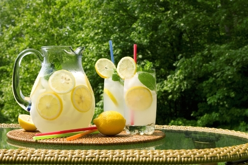

Limonada

Ingredientes:
- 10-Limones
- 1-Libra de Azúcar
- 1-Litro de agua
- 1-Pizca de sal
Procedimiento:
Cortar los limones en trocitos muy pequeños y mezclarlos
con el azucar en un contenedor resistente al calor, agregar el agua
y dejar herver unos 10 minutos.
Poner a enfriar y para servirlo debe filtrarce con un colador
ademas de agregar unos cubos de hielo.
Tiempo de preparación: 25 minutos.
Nivel de Dificultad: Facíl.
Porciones: 5 Vasos.